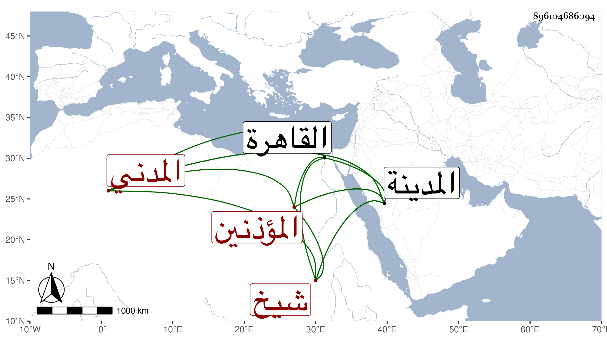

0902Sakhawi.DawLamic.ITO20230111-ara1.EIS1600.896104686094
Biography ID: 896104686094
931
سعد بن الجمال عبد الله بن أحمد المدني ويعرف بابن النفطي شيخ المؤذنين والفراشين بالمدينة النبوية كأبيه ووالد طلحة الآتي . ممن حفظ القرآن وكتبا منها المنهاج والحاوي الفرعيين . سمع بالمدينة على الجمال الكازروني ، وفي سنة أربع وأربعين بالقاهرة على الزين الزركشي في مسلم والشفا ووصفه بالفقيه . مات تقريبا سنة بضع وستين وقد قارب الأربعين ، ويقال انه رأى النبي صلى الله عليه وسلم ، وقال أنت مؤذني .
